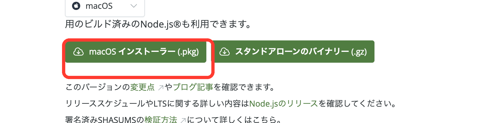
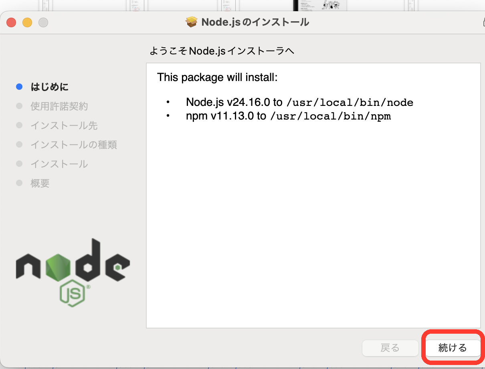
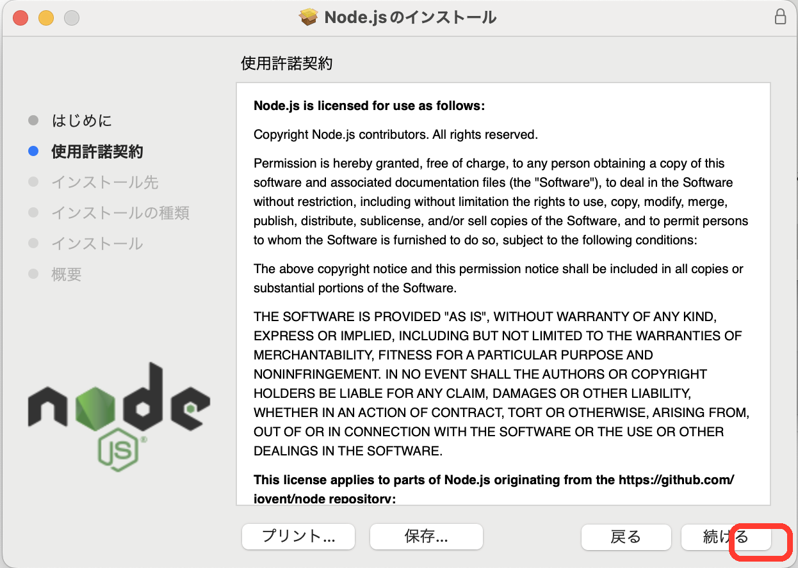
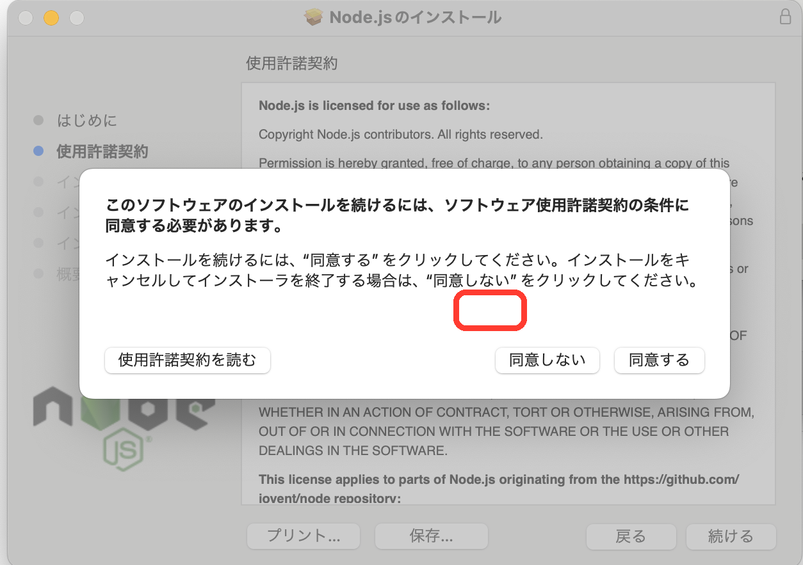
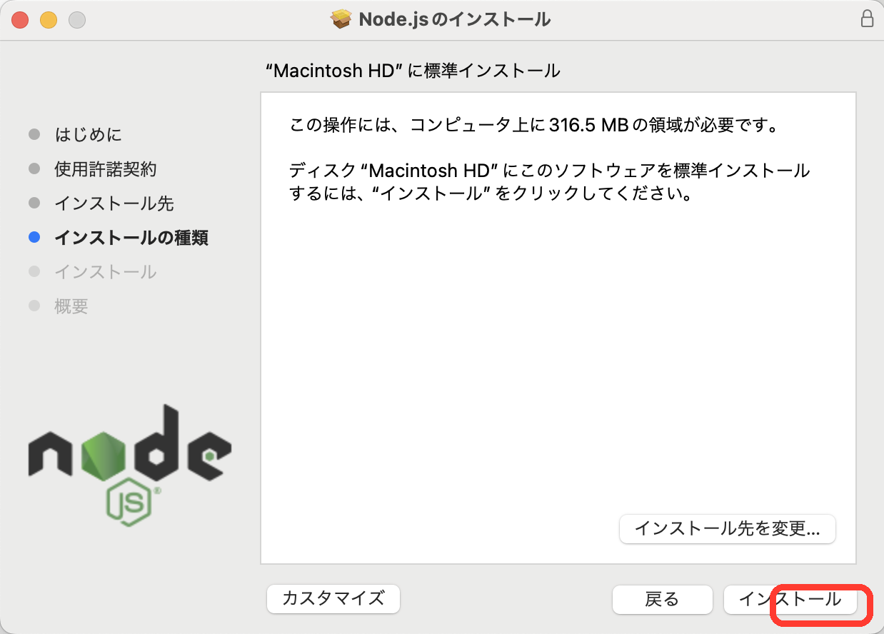
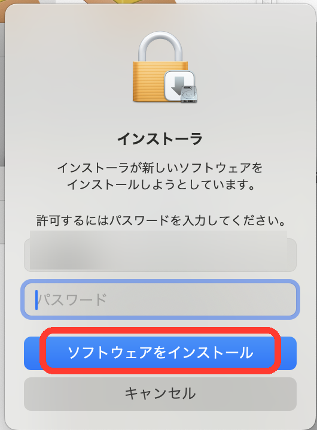
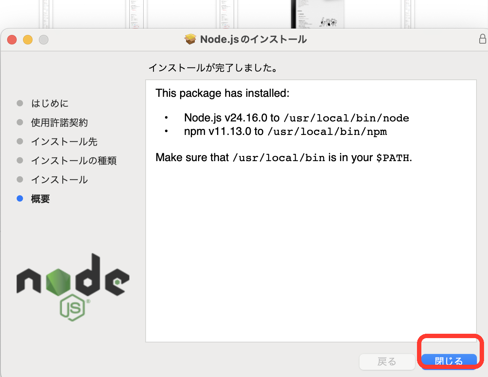
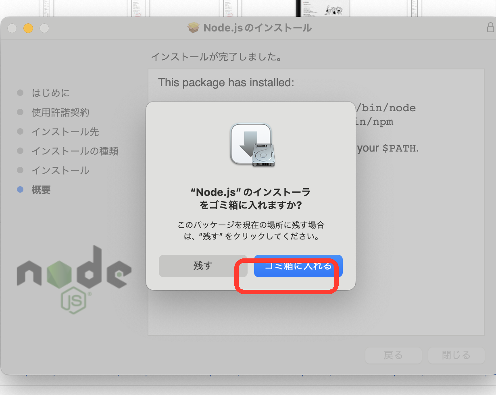

原因がわかったので、ここから一気にいきましょう
なぜインストールできなかったのか？
Claude Code を入れようとしていましたが、「Node.js」というClaude Codeを動かす土台のソフトが入っていない状態でした。
家を建てたい！と思って 木材（Claude Code） を買ったけど、そもそも 土地（Node.js） がなかった、という状態です。
土地さえ用意できれば、その上に家が建てられます！
よくある質問への答え
「アンインストールしてからやるの？」
→ いいえ！何もアンインストールしなくて大丈夫です。
Node.js を新しく入れるだけで解決します。

node-v24.16.0.pkg など）をダブルクリックして開く




⑤〜⑧ の流れをまとめると
右下のボタンを順番に押していくだけ：
続ける → 同意する → インストール → パスワード入力


インストールが完全に完了したら、
今開いている黒い画面（ターミナル）を
一度完全に閉じて、新しく開き直してください。
※開き直さないと、パソコンが新しい土地（Node.js）を認識してくれません！
STEP 1 完了チェック
「command not found」と出た場合
Node.jsのインストールが完了していないか、ターミナルを開き直していない可能性があります。
STEP 1 の「ターミナルを開き直す」をもう一度確認してください。
STEP 2 完了チェック
「Permission denied」というエラーが出たら
頭に sudo をつけて、下記のように打ち直してください。
Macのパスワードを求められるので、入力してEnterを押せば進みます。
STEP 3 完了チェック
虫マークが出た後の流れ
「ログイン方法を選んでください」と聞かれたら、1番（Claude account with subscription）が選ばれた状態で Enter を押してください。
その後ブラウザが開いて、Claudeアカウントでログインすれば完了です！
ここまでできれば Claude Code が使えるようになります。
その後、Superpowers や UI/UX Pro Max を入れる手順に進んでください。
もし途中でエラーや困ったことがあったら、
画面のスクリーンショットを撮って送ってください！